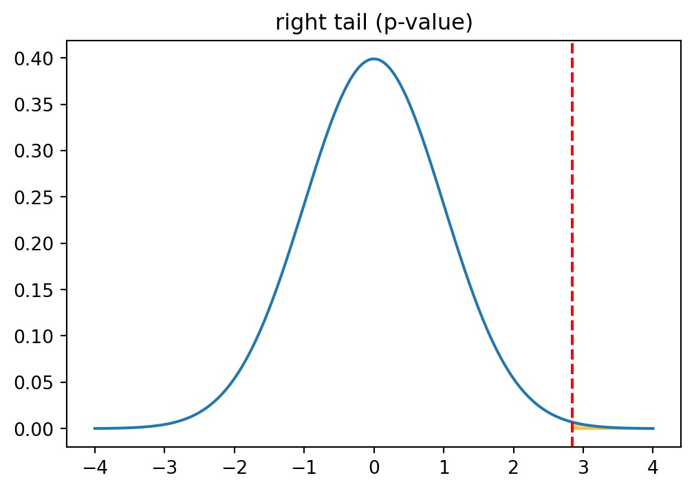
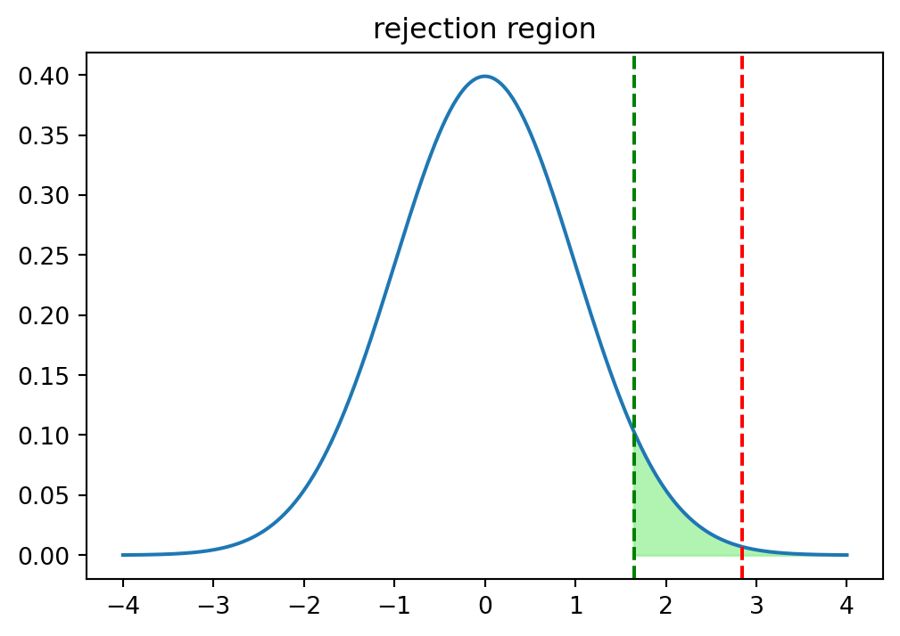
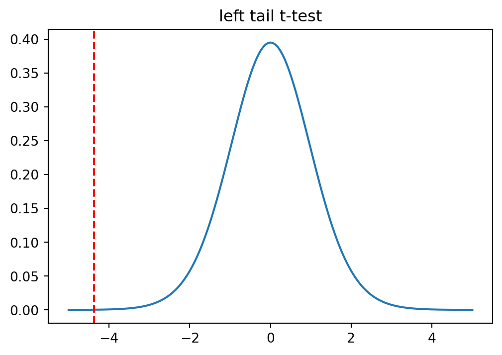
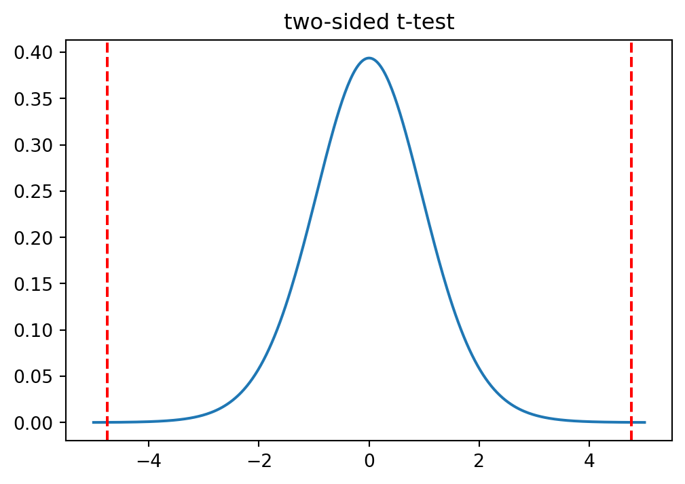

Code
import numpy as np
import pandas as pd
from scipy.stats import norm, t, ttest_1samp
import matplotlib.pyplot as pltcd — title: “Hypothesis Testing” date: “2026-0722” format: html: toc: true toc-depth: 3 number-sections: true embed-resources: true code-fold: false jupyter: python3 —
이 문서는 단일 표본에 대한 모평균 검정을 직접 구현하며 가설 검정의 논리를 손에 익히는 것을 목표로 합니다. 각 문제는 먼저 스스로 풀어본 뒤, 접힌 풀이 상자를 펼쳐 답과 해설을 확인하는 구성입니다.
다루는 검정은 네 가지입니다.
| 상황 | 모표준편차 | 대립가설 방향 | 통계량 | 분포 |
|---|---|---|---|---|
| 연습 1·2 | 알려짐 | 우측 | \(Z\) | \(N(0,1)\) |
| 연습 3 | 모름 | 좌측 | \(t\) | \(t_{n-1}\) |
| 연습 4·5 | 모름 | 양측 | \(t\) | \(t_{n-1}\) |
여기에 시뮬레이션으로 1종 오류율을 직접 확인하는 심화 문제(연습 6)를 더합니다.
가설 검정은 불확실성 아래에서의 귀류법으로 볼 수 있습니다. 주장하고 싶은 것(\(H_1\))을 직접 증명하는 대신, 그 반대인 \(H_0\)이 참이라고 가정하고 관측된 증거가 그 가정 아래에서 얼마나 이상한지를 따집니다. 너무 이상하면 가정이 틀렸다고 보고 \(H_0\)을 기각합니다.
이 “얼마나 이상한가”를 정량화한 것이 p-value입니다.
\[ \text{p-value} = P(\text{관측된 것만큼 또는 그보다 극단적인 증거} \mid H_0 \text{ 참}) \]
여기서 방향이 매우 중요합니다. p-value는 \(P(H_0 \text{ 참} \mid \text{데이터})\)가 아닙니다. 조건이 반대로 걸려 있습니다 — “\(H_0\)이 참이라는 전제하에서 이런 데이터가 나올 확률”입니다. 이 구분이 가설 검정 해석의 거의 모든 오해의 근원이므로, 계산할 때마다 “나는 \(H_0\)이 참이라고 가정한 세계에 있다”를 되새기는 것이 좋습니다.
표준오차와 \(\sqrt{n}\). 표본평균 \(\bar X\)의 분산은 \(\operatorname{Var}(\bar X) = \sigma^2/n\)이고, 따라서 표준오차(standard error)는 \(\sigma/\sqrt{n}\)입니다. 표본이 커질수록 \(\bar X\)가 모평균 주위로 \(\sqrt{n}\)에 비례해 좁게 모이며, 이것이 검정통계량의 분모가 됩니다.
\[ Z = \frac{\bar X - \mu_0}{\sigma/\sqrt{n}}, \qquad t = \frac{\bar X - \mu_0}{s/\sqrt{n}} \]
Z와 t의 차이. 모표준편차 \(\sigma\)를 알면 분모가 상수이므로 표준화 결과가 정확히 \(N(0,1)\)을 따릅니다. \(\sigma\)를 모를 때는 표본표준편차 \(s\)로 대체하는데, \(s\) 자체가 표본마다 흔들리는 확률변수이므로 분모에 추가적인 변동이 생깁니다. 그 결과 분포의 꼬리가 정규분포보다 두꺼워지고, 자유도 \(n-1\)인 \(t\)분포를 따릅니다. \(n\)이 커지면 \(s\)가 \(\sigma\)에 안정적으로 수렴하므로 \(t\)분포는 정규분포로 수렴합니다.
ddof=1의 이유. 표본분산을 계산할 때 편차를 표본평균 \(\bar X\)에서 재는데, \(\bar X\)는 이미 제곱합을 최소화하는 지점이라 편차들이 실제 모평균 기준보다 작게 나옵니다. 이 과소추정을 보정하려고 \(n\) 대신 \(n-1\)로 나눕니다(베셀 보정). 자유도 하나를 \(\bar X\) 추정에 “썼다”고 이해하면 직관적입니다. NumPy에서는 np.std(X, ddof=1)로 지정합니다.
어떤 커피 원두는 봉지당 250g으로 표시되어 있습니다. 한 소비자단체는 이 회사가 원두를 250g보다 많이(과충전) 담는다고 주장합니다. 포장 기계의 모표준편차는 \(\sigma = 5\text{g}\)로 알려져 있고 신뢰할 수 있다고 가정합니다. 표본 36개를 측정했습니다. 주장을 받아들일 수 있는지 p-value 방법으로 검정하세요. (유의수준 0.05)
\(\sigma\)가 주어졌으므로 \(Z\)-검정입니다. 과충전, 즉 \(\mu > 250\)을 주장하므로 대립가설이 큰 값을 지지하는 우측 꼬리 검정입니다.
\[ H_0: \mu = 250 \qquad H_1: \mu > 250 \]
우측 꼬리이므로 p-value는 검정통계량 오른쪽 영역, 즉 norm.sf(Z) (\(=1 - \Phi(Z)\))로 구합니다.
X = [
253.52, 246.8, 255.75, 256.7, 242.24, 245.49, 252.64, 250.42, 251.92, 247.73,
256.4, 255.89, 252.33, 257.64, 254.34, 247.7, 253.84, 247.21, 256.39, 251.75,
251.08, 248.6, 258.11, 251.23, 249.86, 250.24, 254.66, 253.83, 254.06, 254.15,
262.71, 249.97, 249.44, 247.93, 255.08, 257.64
]
# TODO: mu0, sigma, n 정의 후 X_bar 계산
# TODO: Z = (X_bar - mu0) / (sigma / sqrt(n))
# TODO: pvalue = norm.sf(Z) (우측 꼬리)
# TODO: pvalue 와 0.05 비교X = np.array([
253.52, 246.8, 255.75, 256.7, 242.24, 245.49, 252.64, 250.42, 251.92, 247.73,
256.4, 255.89, 252.33, 257.64, 254.34, 247.7, 253.84, 247.21, 256.39, 251.75,
251.08, 248.6, 258.11, 251.23, 249.86, 250.24, 254.66, 253.83, 254.06, 254.15,
262.71, 249.97, 249.44, 247.93, 255.08, 257.64
])
mu0, sigma, n = 250.0, 5.0, len(X)
X_bar = X.mean()
se = sigma / np.sqrt(n) # 표준오차
Z = (X_bar - mu0) / se
pvalue = norm.sf(Z) # 우측 꼬리
print(f"X_bar = {X_bar:.4f}")
print(f"Z = {Z:.4f}, pvalue = {pvalue:.5f}")
print("결론:", "H0 기각 (과충전 주장 채택)" if pvalue < 0.05 else "H0 기각 못함")
xs = np.linspace(-4, 4, 400)
plt.figure(figsize=(6, 4))
plt.plot(xs, norm.pdf(xs))
plt.axvline(Z, color='red', linestyle='--')
tail = np.linspace(Z, 4, 200)
plt.fill_between(tail, 0, norm.pdf(tail), color='orange', alpha=0.6)
plt.title("right tail (p-value)")
plt.show()X_bar = 252.3692
Z = 2.8430, pvalue = 0.00223
결론: H0 기각 (과충전 주장 채택)
\(Z \approx 2.84\)로 표본평균이 250g보다 표준오차 기준 2.84배 위에 있습니다. p-value가 약 0.0022로 0.05보다 작으므로 \(H_0\)을 기각합니다 — 과충전 주장을 채택합니다. \(H_0\)이 참(평균이 정확히 250)이라면 이만큼 무거운 표본평균이 나올 확률이 0.22%에 불과하다는 뜻입니다.
연습 1과 동일한 데이터·가설을 기각역(rejection region) 방법으로 검정하세요. 임계값은 norm.ppf(0.95)이며, 검정통계량이 임계값보다 크면 \(H_0\)을 기각합니다.
기각역 방법은 p-value를 매번 계산하는 대신, 유의수준에 대응하는 임계값을 미리 정해두고 통계량이 그 경계를 넘는지만 봅니다. 우측 꼬리에서 임계값 \(Z_{ub}\)는 표준정규분포의 상위 5% 지점, 즉 norm.ppf(0.95)입니다.
두 방법이 항상 같은 결론을 주는 이유는 CDF가 단조증가하기 때문입니다.
\[ \text{p-value} < \alpha \;\Longleftrightarrow\; 1 - \Phi(Z) < \alpha \;\Longleftrightarrow\; Z > \Phi^{-1}(1-\alpha) = Z_{ub} \]
즉 “꼬리 넓이가 \(\alpha\)보다 작다”와 “통계량이 임계값을 넘는다”는 완전히 동치입니다. p-value 방법은 얼마나 극단적인지를 연속적인 수치로, 기각역 방법은 경계를 넘었는지를 이분법으로 표현할 뿐입니다.
cv = norm.ppf(0.95) # 우측 꼬리 임계값
print(f"Z = {Z:.4f}, 임계값 cv = {cv:.4f}")
print("결론:", "H0 기각" if Z > cv else "H0 기각 못함")
xs = np.linspace(-4, 4, 400)
plt.figure(figsize=(6, 4))
plt.plot(xs, norm.pdf(xs))
plt.axvline(Z, color='red', linestyle='--')
plt.axvline(cv, color='green', linestyle='--')
region = np.linspace(cv, 4, 200)
plt.fill_between(region, 0, norm.pdf(region), color='lightgreen', alpha=0.7)
plt.title("rejection region")
plt.show()
print("두 방법 일치:", (pvalue < 0.05) == (Z > cv))Z = 2.8430, 임계값 cv = 1.6449
결론: H0 기각
두 방법 일치: True임계값은 약 1.645이고 \(Z \approx 2.84\)가 이를 넘으므로 기각입니다. 연습 1의 p-value 방법과 동일한 결론이며, 마지막 줄에서 두 판정이 언제나 일치함을 확인합니다.
어떤 보조배터리는 완충 시 500시간 대기가 가능하다고 표시되어 있습니다. 한 리뷰어는 실제 대기시간이 500시간에 미치지 못한다고 주장합니다. 모표준편차는 주어지지 않았지만, 대기시간(모집단)은 정규분포를 따름이 확인되었습니다. 표본 25개를 측정했습니다. (유의수준 0.05)
이번에는 \(\sigma\)가 주어지지 않았습니다. 정규모집단 가정 아래에서 \(\sigma\)를 표본표준편차 \(s\)로 대체하면 통계량은 자유도 \(n-1 = 24\)인 \(t\)분포를 따릅니다. 미달, 즉 \(\mu < 500\)을 주장하므로 작은 값을 지지하는 좌측 꼬리 검정이고, p-value는 t.cdf(t_stat, df)로 왼쪽 영역을 구합니다.
\[ H_0: \mu = 500 \qquad H_1: \mu < 500 \]
X = [
490.63, 481.92, 482.11, 499.81, 500.92, 498.52, 484.01, 494.79, 493.4, 494.62,
502.46, 494.68, 500.15, 492.81, 495.47, 499.58, 474.51, 488.16, 486.36, 484.33,
488.7, 509.94, 481.61, 503.62, 471.81
]
# TODO: S = np.std(X, ddof=1) 로 표본표준편차 사용
# TODO: t_stat = (X_bar - mu0) / (S / sqrt(n)), df = n - 1
# TODO: pvalue = t.cdf(t_stat, df) (좌측 꼬리)X = np.array([
490.63, 481.92, 482.11, 499.81, 500.92, 498.52, 484.01, 494.79, 493.4, 494.62,
502.46, 494.68, 500.15, 492.81, 495.47, 499.58, 474.51, 488.16, 486.36, 484.33,
488.7, 509.94, 481.61, 503.62, 471.81
])
mu0, n = 500.0, len(X)
df = n - 1
X_bar = X.mean()
S = X.std(ddof=1)
t_stat = (X_bar - mu0) / (S / np.sqrt(n))
pvalue = t.cdf(t_stat, df=df) # 좌측 꼬리
print(f"X_bar = {X_bar:.4f}, S = {S:.4f}")
print(f"t = {t_stat:.4f} (df={df}), pvalue = {pvalue:.5f}")
print("결론:", "H0 기각 (미달 주장 채택)" if pvalue < 0.05 else "H0 기각 못함")
xs = np.linspace(-5, 5, 400)
plt.figure(figsize=(6, 4))
plt.plot(xs, t.pdf(xs, df=df))
plt.axvline(t_stat, color='red', linestyle='--')
tail = np.linspace(-5, t_stat, 200)
plt.fill_between(tail, 0, t.pdf(tail, df=df), color='orange', alpha=0.6)
plt.title("left tail t-test")
plt.show()X_bar = 491.7968, S = 9.3799
t = -4.3727 (df=24), pvalue = 0.00010
결론: H0 기각 (미달 주장 채택)
\(t \approx -4.37\)로 표본평균이 500시간보다 한참 아래입니다. p-value가 약 0.0001로 매우 작아 \(H_0\)을 기각합니다 — 미달 주장을 채택합니다. 만약 여기서 \(\sigma\)를 안다고 착각하고 Z-검정을 썼다면 꼬리가 얇은 정규분포를 쓰게 되어 p-value를 실제보다 작게 잡는, 즉 너무 쉽게 기각하는 오류를 범합니다. \(\sigma\)를 모를 때 t-검정을 쓰는 것은 이 과신을 막아줍니다.
어떤 볼트는 지름 10mm 규격으로 생산됩니다. 품질관리팀은 이 볼트가 규격에서 벗어난다(=10mm가 아니다)고 의심합니다 — 너무 크든 작든 문제입니다. 지름은 정규분포를 따르고 모표준편차는 주어지지 않았습니다. 표본 20개를 측정했습니다. (유의수준 0.05)
“크든 작든 벗어나면 문제”이므로 한쪽 방향만 보는 것이 아니라 양쪽 꼬리를 모두 고려하는 양측 검정입니다.
\[ H_0: \mu = 10 \qquad H_1: \mu \neq 10 \]
\(t\)분포는 0을 중심으로 대칭이므로, 통계량을 좌측 꼬리에 오도록 \(-\lvert t \rvert\)로 만든 뒤 한쪽 꼬리 확률을 구하고 2배하면 양측 p-value가 됩니다. 대칭성이 이 “×2”를 정당화하며, 비대칭 분포에서는 이렇게 단순히 두 배할 수 없다는 점을 기억해 두면 좋습니다.
X = np.array([
10.076, 10.186, 10.279, 10.306, 10.325, 10.073, 10.048, 10.339, 10.108, 9.869,
9.901, 9.948, 10.259, 10.181, 10.302, 10.056, 10.185, 10.288, 10.082, 10.25
])
mu0, n = 10.0, len(X)
df = n - 1
X_bar = X.mean()
S = X.std(ddof=1)
t_stat = -abs(X_bar - mu0) / (S / np.sqrt(n)) # 좌측 꼬리로
pvalue = t.cdf(t_stat, df=df) * 2 # 양측 → 2배
print(f"X_bar = {X_bar:.4f}, S = {S:.4f}")
print(f"t = {t_stat:.4f} (df={df}), pvalue = {pvalue:.5f}")
print("결론:", "H0 기각 (규격 이탈)" if pvalue < 0.05 else "H0 기각 못함")
xs = np.linspace(-5, 5, 400)
plt.figure(figsize=(6, 4))
plt.plot(xs, t.pdf(xs, df=df))
for c in (t_stat, -t_stat):
plt.axvline(c, color='red', linestyle='--')
left = np.linspace(-5, t_stat, 200)
right = np.linspace(-t_stat, 5, 200)
plt.fill_between(left, 0, t.pdf(left, df=df), color='orange', alpha=0.6)
plt.fill_between(right, 0, t.pdf(right, df=df), color='orange', alpha=0.6)
plt.title("two-sided t-test")
plt.show()X_bar = 10.1531, S = 0.1439
t = -4.7564 (df=19), pvalue = 0.00014
결론: H0 기각 (규격 이탈)
표본평균이 약 10.15mm로 규격보다 살짝 큽니다. \(t \approx -4.76\)(좌측 꼬리로 변환한 값)이고 양측 p-value가 약 0.0001로 작아 \(H_0\)을 기각합니다 — 규격 이탈로 판단합니다. 그래프에서 양쪽 꼬리를 대칭으로 칠한 것이 “방향을 특정하지 않고 벗어남만 본다”는 양측 검정의 의미를 보여줍니다.
scipy 내장 함수로 교차 검증연습 4의 수동 계산을 scipy.stats.ttest_1samp으로 검증하세요. 내장 함수의 statistic, pvalue가 수동 계산과 일치하는지 확인합니다.
수동 구현이 맞았는지 확인하는 가장 확실한 방법은 잘 검증된 라이브러리 함수와 대조하는 것입니다. ttest_1samp은 통계량 부호를 \(\bar X - \mu_0\) 기준으로 주므로(즉 표본평균이 크면 양수), 우리가 좌측 꼬리로 변환하며 붙인 음수와는 부호만 다릅니다. 절댓값으로 비교하면 통계량과 p-value가 모두 일치해야 합니다.
scipy : t=4.7564, p=0.00014
수동계산 : t=4.7564, p=0.00014
통계량 일치(부호 무시): True
pvalue 일치: True두 결과가 소수점 이하까지 일치합니다. 실무에서는 물론 내장 함수를 쓰지만, 이렇게 한 번 손으로 분해해 보면 함수가 내부에서 무엇을 하는지가 명확해집니다 — 표준오차로 나누고, 자유도 \(n-1\)인 \(t\)분포의 꼬리를 재고, 양측이라 두 배할 뿐입니다.
\(H_0\)이 참인 모집단(\(\mu = \mu_0\))에서 표본을 반복 추출해 매번 양측 t-검정을 수행하고, \(p < \alpha\)인 비율이 \(\alpha\)에 수렴하는지 관찰하세요.
1종 오류(Type-I error)는 \(H_0\)이 참인데도 기각하는 오류입니다. 유의수준 \(\alpha\)의 진짜 의미는 바로 이 오류의 장기 발생 비율의 상한입니다. 이것은 추상적인 약속이 아니라 측정 가능한 빈도로, 몬테카를로로 눈으로 확인할 수 있습니다.
\(H_0\)이 참인 세계(\(\mu = \mu_0\))를 직접 만들어 수천 번 표본을 뽑고, 매번 검정해 기각 비율을 세어봅니다. \(\alpha = 0.05\)라면 그 비율이 약 5%로 나와야 합니다 — 검정이 “설계대로” 작동한다면 참인 귀무가설을 100번 중 5번만 잘못 기각한다는 뜻입니다. 이 실험은 p-value가 특정 데이터 하나에 대한 확률이 아니라 반복 표집이라는 사고 실험 위에서 정의된 빈도임을 체감하게 해 줍니다.
rng = np.random.default_rng(0)
alpha, n, mu0, sim = 0.05, 30, 0.0, 20000
df = n - 1
reject = 0
for _ in range(sim):
s = rng.normal(mu0, 1.0, n) # H0 이 참인 모집단
S = s.std(ddof=1)
t_stat = -abs(s.mean() - mu0) / (S / np.sqrt(n))
p = t.cdf(t_stat, df=df) * 2
reject += (p < alpha)
rate = reject / sim
print(f"alpha = {alpha}, 시뮬레이션 기각 비율 = {rate:.4f}")
print("alpha 에 근접:", np.isclose(rate, alpha, atol=0.01))alpha = 0.05, 시뮬레이션 기각 비율 = 0.0484
alpha 에 근접: True2만 번 반복에서 기각 비율이 약 0.048로, 설정한 \(\alpha = 0.05\)에 매우 가깝게 나옵니다. \(H_0\)이 참인데도 약 5%의 실험에서 기각이 일어난 것이며, 이것이 바로 “유의수준을 0.05로 잡는다”는 말의 조작적 의미입니다. 반복 횟수를 늘릴수록(대수의 법칙) 이 비율은 0.05로 더 안정적으로 수렴합니다.
다음 단계로는 두 표본 비교(독립·대응 표본 t-검정), 2종 오류와 검정력(power), 효과크기(effect size)로 확장할 수 있습니다.